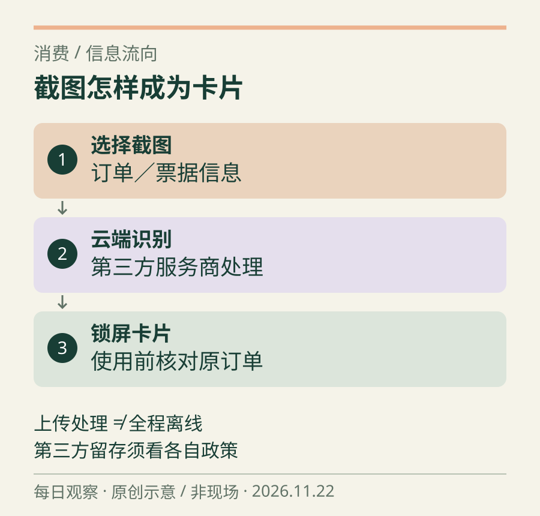

2026-11-20 开发者自述刊出；非应用首发日
浮屏把截图做成锁屏卡片，便利以云端识别为前提
总要翻回小程序找取餐码的人，可以留意浮屏（Floato）的做法：把截图交给应用识别，再显示成锁屏或灵动岛卡片。11 月 20 日少数派刊登的是开发者 Nezuko 的产品自述，列出应用内选择、分享菜单和快捷指令三种导入方式；它不能充当本刊的体验评测，也不能证明产品当日首发。开发者自述 ↗
使用门槛包括 iOS 26.5 或以上，以及接受截图上传处理。美区 App Store 页面列有内购；不同地区和缓存的价格不宜混算，这里不报统一年费，也不把开发者对国区上架的预计写成已经完成。美区产品页 ↗
隐私政策进一步说明，截图会经浮屏服务器转给云端 AI 服务商；浮屏侧的识别结果最多保存 24 小时，第三方仍按各自政策处理数据，条款提示可能留存并用于模型改进或训练。“不保存原图”因而不能理解成全程离线或所有服务商都不留存。是否愿意把票据或取件信息交给云端，是使用前要作出的选择；识别后仍应与原订单核对。隐私政策 ↗
来源与日期
- sspai.com ↗ · 2026-11-20
- apps.apple.com ↗ · 页面未标固定发布日期；抓取缓存非实时结账
- floato.thoamsy.app ↗ · 标示生效日期2026-11-17